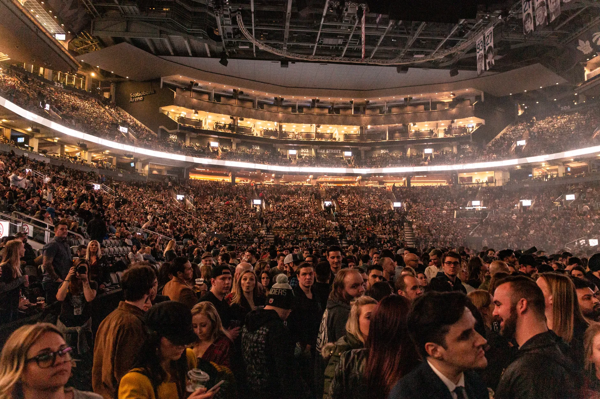
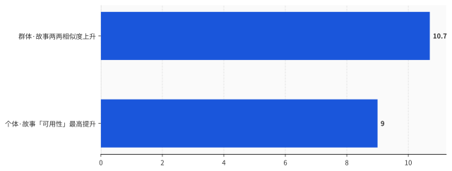
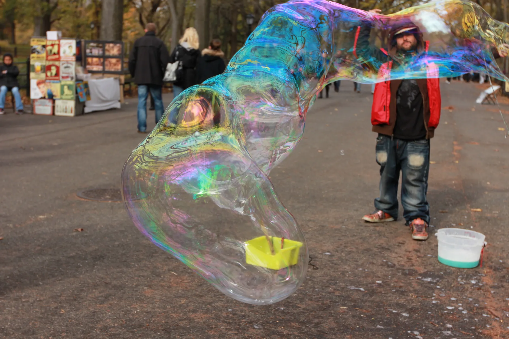

一、九个人，一个名字
先把那个实验说全。
这是沃顿商学院 Lennart Meincke、Gideon Nave、Christian Terwiesch 几个人做的，2025 年发在《自然·人类行为》（Nature Human Behaviour）上。他们让人做创意发散题——给玩具起点子、拿日常物品设计新东西，一半人自己想，一半人用 ChatGPT 帮着想。一共五组实验。
结论很统一：用 ChatGPT 的那组，每个人的点子单看都不差，但整组人的点子高度重叠，重叠率高到 94%。前面说的「Build-a-Breeze Castle」撞名九次，就出在这。而自己想的那组，点子几乎条条不一样。
你品一下这个画面。AI 没让任何人变笨，它让每个人都变「好」了一点——然后所有人一起，朝着同一个「好」走了过去。
这里有个特别反直觉的点，得说清楚：同质化，不是因为大家偷懒、不是因为有人抄。恰恰相反，是因为每个人都认真用了 AI，每个人都拿到了那个「最优解」。问题在于，对同一道题，AI 给一万个人的「最优解」，长得都差不多。
说白了，AI 不是把creative的人变平庸了，是把所有creative的人，导向了同一种creative。就这。
那这只是「起名字」这种小事吗？换个更硬的实验看看。
二、个体往上，群体往下，是同一根杠杆
2024 年 7 月，《科学·进展》（Science Advances）登了一篇更狠的，作者是 Anil Doshi 和 Oliver Hauser。
他们找了 293 个人写短篇小说，一部分人能看到 AI 给的故事点子，一部分人纯靠自己。写完，再找 600 个评审、打了三千多份评分。
两个结果同时成立，而且是对着干的：
一个，AI 确实让小说更好看了。拿到 AI 点子的人，作品的「可用性」（能不能抓住读者、有没有发表潜力）最高涨了 9%。而且最受益的，是那些本来写得最差的人——AI 把短板托了上去。这是实打实的个体增益。
另一个，AI 写出来的小说，彼此之间更像了。研究测了故事两两之间的相似度，用上 AI 之后，这个相似度涨了大约 10%。也就是说，每篇单看都更精彩，但摞在一起，面孔越来越糊成一张。

Doshi 和 Hauser 给这事起了个名，叫「社会困境」（social dilemma）。我把它翻得再白一点：对你个人，用 AI 是稳赚的；对你们所有人，多样性是稳赔的。而因为对个人稳赚，所以没有任何一个理性的人，会主动不用。
这就是它阴的地方。它不像盗版、不像注水那种「坏行为」，你可以靠骂、靠管去治。它是「好行为」的副产品——每个人都做了对自己最有利、最聪明的选择，然后集体掉进坑里。经济学管这叫公地悲剧：草是大家的，羊是自己的，于是草一定被啃光，哪怕每个放羊的人都不是坏人。
到这你可能想问：凭什么 AI 给所有人的答案就长得差不多？这事怪用的人吗？
不怪。这毛病，是模型出厂前就焊死在里头的。
三、毛病不在你，在模型被「调乖」的那一步
要看懂这个，得知道一个大模型是怎么从「能说话」变成「好用」的。
预训练完的原始模型，其实是个话痨，什么都敢说，但经常胡说。厂商接下来会做一步，叫 RLHF（基于人类反馈的强化学习）——拿人的偏好去训它，让它学会挑那个「大多数人会觉得有用、得体、安全」的答案说。这一步，是它从「野」变「乖」的关键，也是它变好用的关键。
问题是，「乖」是有代价的，而这个代价正好是多样性。
2024 年 ICLR 上，Robert Kirk 等人有篇论文把这事测了个明白，结论一句话：RLHF 会显著降低模型输出的多样性。同年另一篇（Padmakumar 和 He）测得更细——他们对比发现，没经过这步调教的原始 GPT-3 帮人写作，不怎么压缩多样性；而经过 RLHF 调乖的 InstructGPT 一上手，词汇和内容的多样性就明显往下掉。
你把这两篇拼起来看，结论很冷：让 AI「好用」的那一步，和让 AI「趋同」的那一步，是同一步。不是两个毛病，是一个硬币的两面。它越是被训得「给你最稳妥、最得体的那个答案」，它就越是给一万个人同一个答案。
更极端的情况叫「模型崩塌」。2024 年《自然》（Nature）上 Ilya Shumailov 那篇说得很清楚：如果让 AI 反复拿 AI 生成的东西去训练下一代 AI，分布的「尾巴」——也就是那些稀有的、古怪的、不主流的内容——会先消失，模型最后收敛成一小撮平庸的均值。这不只是文字，图像、声音的模型都一样。

所以别再自责「是不是我提示词没写好」。默认状态下，模型本来就是一台「求平均」的机器。它的工作不是给你最奇的那个答案，是给你最稳的那个——而最稳的那个，对所有人都一样。
它碾平的，还不只是创意本身。
四、它顺手碾平的，是「你是谁」
同质化最容易被忽略的一层，是它有方向。它不是把大家往中间收，是把大家往某一个特定的口音上收。
2025 年的 CHI 大会上，康奈尔的 Mor Naaman 团队发了篇研究，找了 118 个印度人和美国人写东西，开 AI 写作建议。结果是：印度人的写法，明显朝美国人的写法靠了过去，而反过来美国人几乎没被印度人影响。更扎心的是，印度人用 AI 的效率增益还更小——因为 AI 老给他们「不对味」的建议，他们得花更多力气去改。
翻成人话：AI 的「默认审美」是有国籍的。你以为它在帮你表达，它其实在悄悄地、礼貌地，把你的表达改成它老家那个味儿。
这事在语言里也留下了指纹。2025 年《科学·进展》上 Dmitry Kobak 那篇，扒了一千五百万篇生物医学论文摘要，发现 ChatGPT 出来之后，「delve」（钻研）这类词的出现频率暴涨——光「delves」一个词，频率就涨了 28 倍。他们据此估算，2024 年至少 13.5% 的摘要是 AI 帮着写的，某些领域这个数字飙到 40%。一个本来五花八门的学术语料库，正在被几百个 AI 偏爱的词，统一刷成同一种腔调。
音乐更直白。2024 年底一篇叫《Missing Melodies》的研究统计了上百万小时的训练音频，发现里头约 86% 都是全球北方（欧美）的音乐，全球南方的曲风只占 14.6%。Suno、Udio 这些张口就来的生成器，喂的就是这套偏食的食谱。于是它「创作」出来的世界音乐，听着总像同一个地方的人写的。就这。
创意被碾平，你还能安慰自己「反正都是娱乐」。可当被碾平的是你的口音、你的用词、你的文化默认值，碾完之后你甚至不知道丢了什么——因为那个「更顺、更专业、更得体」的版本，看起来明明是升级。
那问题能修吗？
五、能修，但没人有动力修
我得把话说公道。同质化不是不能治。
沃顿那几个人（对，还是他们）后来又写了篇《Prompting Diverse Ideas》，证明只要你舍得在提示词上下功夫——加思维链、强制要求 AI 给出差异化的方案——AI 产出的创意方差是能被显著拉回来的。AI 实践派的代表 Ethan Mollick 也一直是这个调：同质化是真问题，但它是个工程问题，能靠更好的用法解决。
技术上，他说得对。2025 年还有一篇叫《Verbalized Sampling》的论文更进一步，揪出了趋同的病根——是 RLHF 训练时，人类标注员天然偏爱「眼熟、顺口」的答案，这种偏好被喂进了模型，让它学会了往典型、往中间靠。研究者只用一句提示词的小技巧（让模型一次给出多个答案并报出各自概率，再抽样），就把多样性拉回了 2 到 3 倍。所以你看，它真不是治不了，连根都找着了。
但这恰恰是整件事最让人没辙的地方。
因为「修好它」需要额外的力气，而「将就用」零成本还更快。对你个人来说，最优解永远是接住 AI 吐出来的第一个还不错的答案——你为什么要费劲去逼它给你十个怪点子，再自己挑？省下来的那点多样性，又不进你的口袋，是进「所有人」那个虚无缥缈的公共账户。
于是又绕回第二节那个社会困境：人人都有能力修，人人都没有动力修。能修，和会被修，是两码事。
我也得把反方最硬的一拳替它们打出来。2025 年 Ashkinaze 等人做过一个八百多人、四十多国参与的大实验，结论跟 Doshi 他们正好相反：在一个「你能看到别人的点子在不断演化」的动态设计里，给人看 AI 的例子，反而让集体的点子多样性涨了。这拳很实，得接住。接法是：那个能涨多样性的场景，是被精心设计过的——有源源不断的他人输入在搅动。而你我每天真实的用法，是一个人、一个对话框、一个「采纳」按钮，看不到别人，也等不及演化。这恰恰就是 Doshi 和 Hauser 那个会趋同的场景。能涨多样性的，是实验室里的特例；会赔多样性的，是你手机里的日常。
更糟的是，你想换个模型躲开都难。2026 年 3 月发在《PNAS Nexus》上的一篇研究测了一圈，发现不同公司的大模型，在创意发散题上给出的答案，竟然彼此也高度雷同，模型与模型之间的相似，远高于人与人之间。它们读的是同一片互联网，被同一套 RLHF 思路调教，最后长出了同一种品味。你以为你在 ABCD 之间选，其实它们是一个人的四个马甲。
所以这事的终局，不是「AI 会不会扼杀创意」——它不会，它确实让你我每个人都更能写、更能画、更能编。终局是：当全世界八十亿人共用同几台「求平均」的机器，我们每个人都在变得更有创意的同时，集体正在变成同一个人。
赢的是你，单数的你。赔的是你们，复数的你们。而账单，记在那个没人负责的公共账户上。
写在最后
回到开头那九个人。
他们没有一个人偷懒，没有一个人抄袭，每个人都真诚地、努力地、用上最好的工具，想出了一个自己满意的好名字。
然后他们撞了同一个名。
这才是 AI 同质化最该让人后背发凉的地方：它不是靠让你变差来抹平你，它是靠让你变好来抹平你。它给你的每一步都是升级，每一步你都心甘情愿，等你回头，发现身边所有人手里举着的，是同一座微风城堡。
下次 AI 帮你润色完一段话、生成完一张图、写完一段旋律，你先别急着点「采纳」。你可以问自己一个特别扫兴、但特别要紧的问题：
这个「更好的版本」，是更像我了，还是更像所有人了？
AI 不会让你失去创意。它只会让你的创意，和另外八十亿人的，长成同一张脸。
而你，可能压根没发现自己什么时候，开始跟全世界撞名。